Hi all,
The site has grown in recent years to explore different tools in the data world. One of which I have started to enjoy more and more during my time at JLL and that is Alteryx.
This week, Medha Khurana joins the site to talk about some of top Alteryx tips. Medha recently completed her Advanced exam and also has kickstarted her own site https://www.medhakhurana.com/
I love when people make that next jump into sharing more through different means, so to see the site come alive is very exciting.
CJ: Medha, Thanks for joining the blog. For those that are unaware, can you tell us a little about your journey to date and what excites you about the world of data analytics?
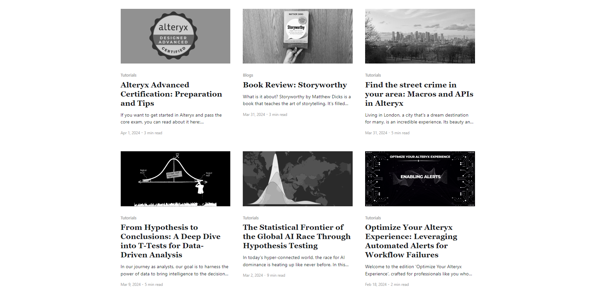
Hello CJ, thank you for the invitation to your guest blog. It's truly an honour to be featured on your website.
I'm a data professional based in the city of London, originally from Delhi, India. My introduction into the world of data began during my undergraduate studies, where I was introduced to the basic concepts within data analytics and management. Eager to delve deeper, I embarked on a journey of self-learning through online courses, books, and personal projects. However, my career initially led me to a role as a Software Engineer, which I soon discovered wasn't my true passion. To align my career with my interests, I pursued a Master's degree in Business Analytics from Warwick Business School. It exposed me to advanced analytics techniques, business statistics, text analytics and I did several collaborative projects and made me fall in love with data analytics.
Following studies, I joined a financial consulting firm in their Data Analytics division. I worked on a variety of projects—from data visualization to building data pipelines, before taking on a role as a Senior Business Intelligence Analyst at JLL.
What excites me the most about being part of this industry is that it never stands still, innovation and learning are constant companions here. Both of these elements are a perfect blend of what I seek in life.
CJ: You recently started your own site https://www.medhakhurana.com/. I love the grayscale theme to it. What prompted you to start and what can we expect of the site in 2024?
Thank you so much. I actually started it on my birthday, as a gift to myself! It took me approximately three weeks to set it up, from selecting the hosting platform to crafting its design and filling its pages with some insightful content.
Teaching is practically in my DNA. Coming from a family of teachers, sharing knowledge brings me immense satisfaction. It's a reciprocal process: it strengthens my understanding while empowering others to start their own learning journeys. When I learn something new, I like to make it simple and share it so others can learn too. It's a philosophy I live by: to truly master something, one must teach it.
Secondly, I've long drawn inspiration from remarkable members of the data community, such as yourself who have built a brand of their own by sharing what they are passionate about with others. I wanted to do that too - to cultivate my own brand, be a source of inspiration and help others along the way.
You'll find a variety of content there. I'll keep up with my Alteryx Optimization series, sharing helpful tips. There will be more tutorials on how to use advanced Alteryx tools for interesting projects. Plus, I'll dive into topics like statistics, data visualization, or anything else I find fascinating. The goal is to keep sharing knowledge and helping each other learn!
I'm also aiming to cover off personal reflections on book reviews, and insights into student career paths.
CJ: You recently passed the Alteryx advanced exams. What did you find most challenging as part of it? Are there certain tools that you found important to revisit beforehand?
Despite using Alteryx daily in my work and solving weekly challenges regularly, I found the practical questions in the exam quite demanding to complete within the allotted time. Perhaps it was the pressure of the exam itself. Nonetheless, I recommend revisiting advanced data preparation and transformation tools like Multi-Field Formula, Multi-Row Formula, and Regular Expressions. Additionally, it's beneficial to brush up on less commonly used tools such as 'Block Until Done' and 'Run Command' to refresh your understanding of their functionalities.
I've dedicated a blog to Alteryx advanced exam preparation and tips, which you can find on my website for those interested.
CJ: What are your 10 top tips for Alteryx users, from a technical standpoint? Is this something you can share a copy with us?
Absolutely, I love using the cool hacks in Alteryx to work in a more efficient way. Here are top 10 tricks that I use most often:
TIP 1: Create Workflow Groups
Creating workflow groups enables you to open multiple workflows at once. For example, if you're working on three separate workflows and want to pick up where you left off the next day, you can create a workflow group. Simply go to File and select 'Create Workflow Group'. This means that instead of opening each workflow individually, you can simply open the workflow group, and all three workflows will open automatically.
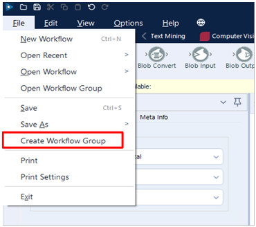
TIP 2: Sort/Filter/Cleanse from Results Window
If you want to preserve the sorting of a column in the results window, simply click the green tick icon at the top right. It's a real time-saver!
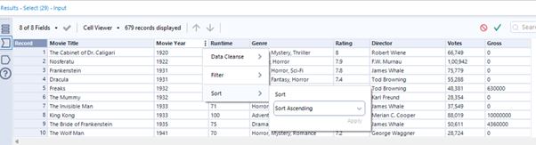
TIP 3: Arrange the tools in workflow
When working on a chunky workflow, organizing tools is key. Instead of manually aligning each one, save time with two handy shortcuts:
Align tools horizontally by clicking Cntrl Shift -
Align tools vertically by clicking Cntrl Shift +
TIP 4: Distribute Tools Equally
If you love clean and well-organized workflows, another useful tip for arranging tools in your workflow is to select all the tools in a row, then right-click and choose 'Distribute Tools Horizontally/Vertically’.
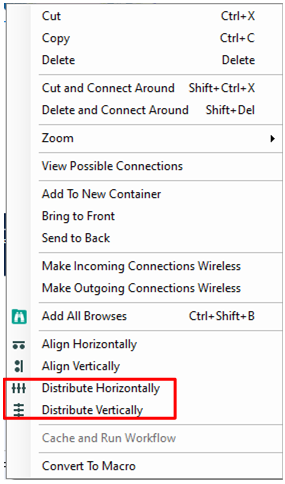
TIP 5: Output Data Using Browse Tool
Ever since I have discovered about this tip, I've completely replaced my use of output tool. Now I simply use a browse tool instead - navigate to the results pane, click ‘Actions’, select 'Export,' then 'All Records,' and quickly download data in any desired format.
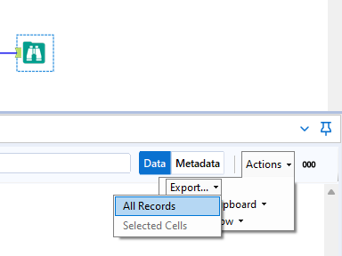
TIP 6: Open Containing Folder
One of my favourite tips in Alteryx. Right click on the tool or workflow to select ‘Open containing folder’ and voila! You'll be instantly directed to the folder where your file/workflow is stored. It's a game-changer for saving time—no more endless digging through nested folders!
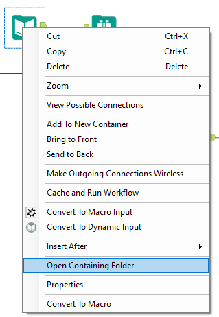
TIP 7: Use Insert After to include a new tool
Imagine you have an input tool connected to five other tools, and you need to add a select tool after it. Instead of reconfiguring each connection individually, you can simply right-click on the input tool and choose 'Insert After' to add the select tool. This will seamlessly insert the select tool between the input tool and its five connected tools.
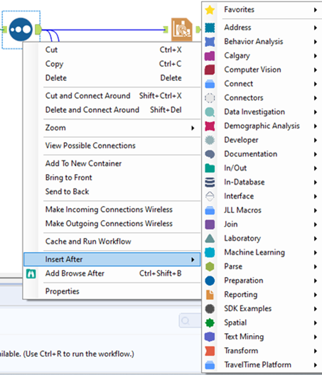
TIP 8: Disable all tools that write output
Imagine a workflow that writes data into database or sends an email to a list of recipients with every run. However, during development, you don’t want this to happen and end up putting a container for each output tool and then disable it. Instead, you can simply click on the blank space in your workflow, go to Runtime tab in Configuration Window on right and select ‘Disable All Tools that Write Output’.
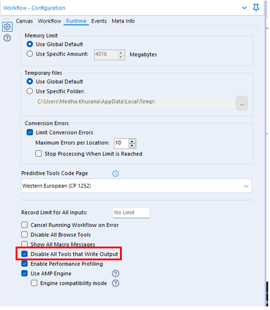
Tip 9: Cache and run workflow
Another tip when your workflow is in the development phase. Imagine you're fetching data from a SQL server, and the lengthy query takes a couple of minutes to execute. Instead of waiting for the query to run each time you run the workflow, there's a handy shortcut. Right-click on the input tool and choose 'Cache and Run Workflow'. This action loads the data from the SQL server once, storing it in memory and drastically cutting down the workflow's run time.
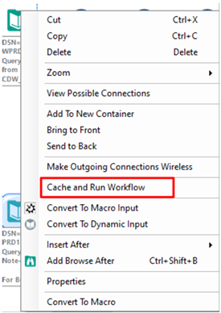
TIP 10: Compare Workflows
Alteryx gives you the ability to compare one workflow from the other. All you need to do is go on Options, select Advanced Options and then select ‘Compare Workflows’. A new window pops up where you can select the two workflows you want to compare.
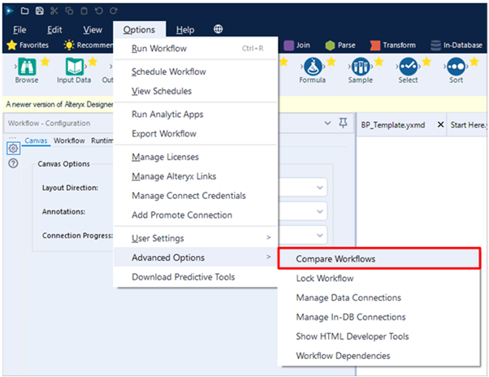
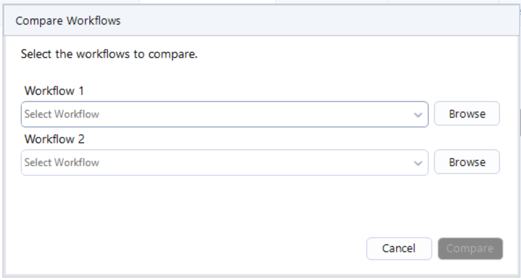
That’s it! Those are my top 10 Alteryx tips. Hope you enjoy them!
CJ: You’ve written previously about workflow optimisation and the need for templates. Building robust solutions is often a struggle in many workplaces. How can a developer keep this in mind when building an Alteryx workflow?
Here's how I like to think about every workflow/solution I build: Will my future self understand this workflow a year from now? And if someone else must use this workflow later on, will they know what's going on?
To ensure you are building sustainable and robust workflows, it is beneficial to stick to a few best practices. One of them is incorporating workflow templates. Templates provide a standardized structure that maintains uniformity across all your workflows. A typical workflow template consists of the following elements:
Workflow title and purpose
Workflow schedule
Change Log
Legend
By adhering to a set template, you're making sure that your workflow is not just easy to understand, but also simple to update and fix if needed.
Here's a simple template you can use as a starting point. Feel free to customize it to fit your needs and your organization's style.
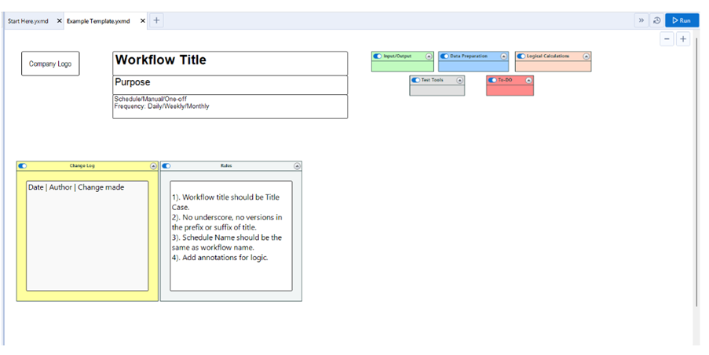
Another good practice is to annotate the business logic on specific tools wherever necessary. This would ensure you are not leaving your co-worker in a pickle wondering why you adopted a particular approach.
Annotating is simple, click on the tool you want to annotate, go to the configuration panel on the right, select “Annotation” and simply input the supporting logic/documentation.
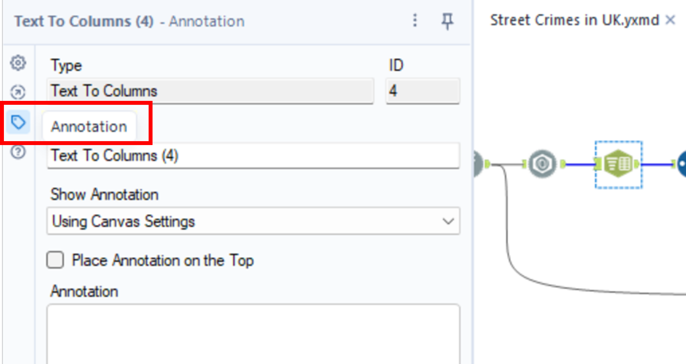
CJ: When it comes to automation, what are the most important things to consider when creating a workflow?
That’s a great question. We often create workflows and schedule them to perform their expected job such as refresh data in tableau server or sending emails etc. However, there are a few things to consider when creating workflows for automation.
Prepare for Unforeseen Errors
Leverage tools like the 'Error' and 'Message' tools in Alteryx to customize error messages for unexpected occurrences in your workflow. For instance, when joining two datasets and expecting no output in the left anchor, configure these tools to send tailored error messages. Harry Osborne from Data School has done a great job explaining this - https://www.thedataschool.co.uk/harry-osborne/message-test-tools/
Identify and Remove Bottlenecks from your Workflow
Remove all the browse tools before publishing your workflow on the server besides any other tools that are not required. Enable performance profiling to identify and resolve bottlenecks that might be slowing down your workflow.
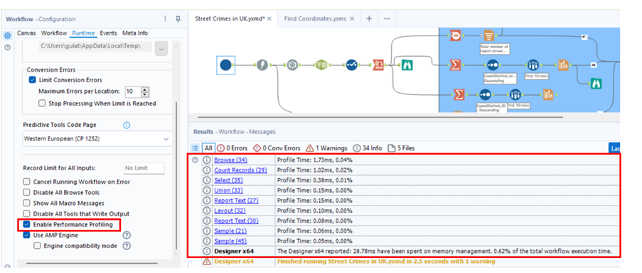
3. Configure Alerts on Workflow Failure
Errors in the workflow hosted on the server can disrupt operations without immediate detection. To mitigate such risks, leverage events in Alteryx to trigger alerts that proactively notify you every time a workflow fails on server. You can find out the detailed process up setting up alerts on my website.
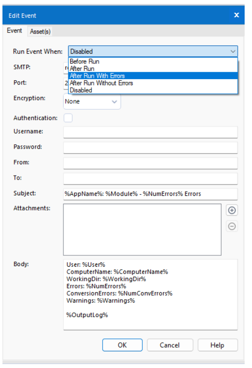
Simple measures like these enable swift action to prevent/resolve issues on workflows that are built for automation before they escalate. By investing a bit of time upfront, you can prevent costly oversights and maintain the reliability of your workflows.
CJ Round-Up:
A blog packed full of tips to help you elevate your Alteryx game. I particularly love the tips around making sure the solutions are robust and conform to a minimum level of standard in way of creating a workflow. Any time we can save letting the workflows run and not have to mitigate bugs and errors is time well saved.
Please join me in following Medha's journey, she put it so poetically the impact community can make. "I've long drawn inspiration from remarkable members of the data community ... who have built a brand of their own by sharing what they are passionate about with others. I wanted to do that too - to cultivate my own brand, be a source of inspiration and help others along the way."
Lovely sentiment to close out this week. Take care.
LOGGING OFF,CJ